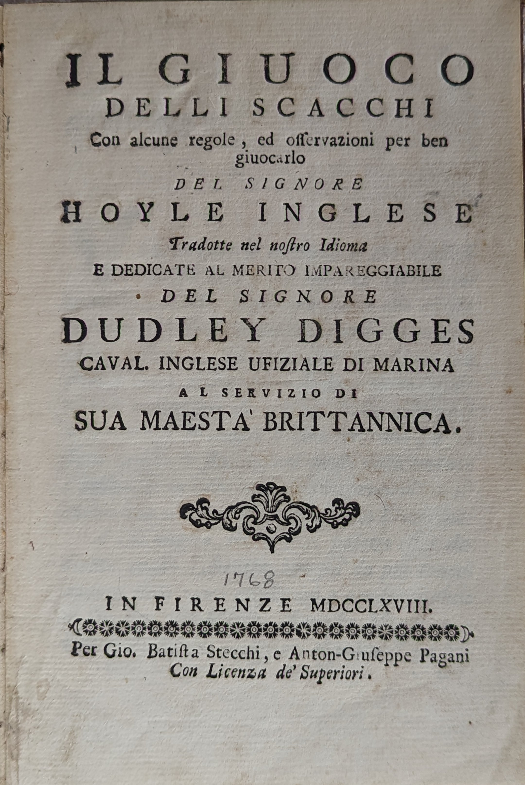

A Descriptive Bibliography of Edmond Hoyle
Copyright © 2014-26 by David Levy
(page updated 2026-03-24)User Guide
Chess.It.1
Il Giuoco delli Scacchi, Per Gio. Batista Strecchi, e Anton-Guiseppe Pagani, first edition, 1768.
 |
Title: | IL GIUOCO | DELLI SCACCHI | Con alcune regole, ed oſſervazioni per ben | giuocarlo | DEL SIGNORE | HOYLE INGLESE | Tradotte nel noſtro Idioma | E DEDICATE AL MERITO IMPAREGGIABILE | DEL SIGNORE | DUDLEY DIGGES | CAVAL INGLESE UFIZIALE DI MARINA | AL SERVIZIO DI | SUA MAESTA BRITTANNICA. | [tailpiece] | IN FIRENZE MDCCLXVIII. | [row of type orn] | Per Gio. Batiſta Stecchi, e Anton-Giuſeppe Pagani | Con Licenza de'Superiori. |
| Collation: | 12o: A12 [$½ signed]; 12 leaves, pp. [1–2] 3–23 [24] |
| Contents: | Signature (Page) Reference | Contents | Signature (Page) Reference | Running Titles |
| A1r (1) | title | |||
| A1v (2) | blank | |||
| A2r–A2v (3–4) | ‘SIGNORE. | [...] | Umiliſs. Obbligatiſs, Servitore | Ranieri Collini.’ | |||
| A3r–A12r (5–23) | ‘[headpiece] | REGOLE, ED OSSERVAZIONI | PER BEN GIUOCARE | A SCACCHI | [...]’ | |||
| A12v (24) | blank |
| Publisher: | Gio. Batista Stecchi, Anton-Giuseppe Pagani |
| Translator: | Ranieri Collini |
| References: | Rather C |
| Copies Seen: | OCl [789I F68H]; Levy [2170] |
| Other Copies: | HAG [KW 973 M 2] (Google); ICR [Fiskesafn 794.1 Hoy] |
| Notes: | The section on chess is from Piquet with an introduction and new paragraph (page 22 ¶ XV) from the translator Ranieri Collini. |